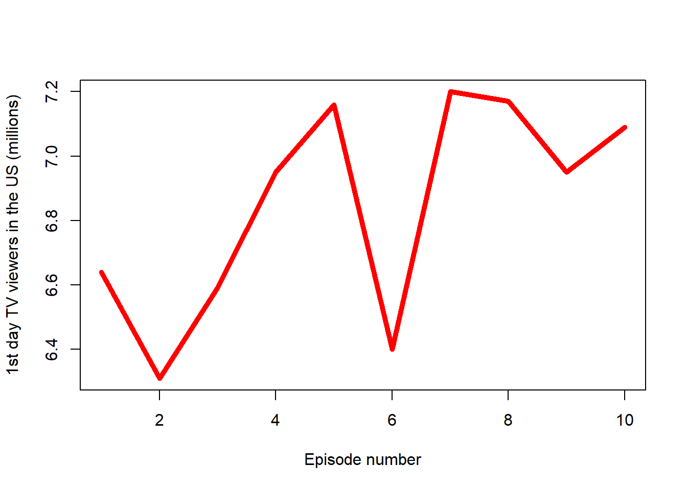

1 Game of Thrones
(Warning: spoilers ahead)
Overview
(From the Wikipedia) Game of Thrones is an American fantasy drama television series created by David Benioff and D. B. Weiss for HBO. It is an adaptation of A Song of Ice and Fire, a series of fantasy novels by George R. R. Martin, the first of which is A Game of Thrones.
Set on the fictional continents of Westeros and Essos, Game of Thrones has a large ensemble cast and follows several story arcs throughout the course of the show. A major arc concerns the Iron Throne of the Seven Kingdoms of Westeros through a web of political conflicts among the noble families either vying to claim the throne or fighting for independence from it. Another focuses on the last descendant of the realm’s deposed ruling dynasty, who has been exiled to Essos and is plotting a return to the throne. A third story arc follows the Night’s Watch, a military order defending the realm against threats from the North.
2 Season summary in numbers
Season summary
The reviewed season was:
2Number of episodes which the season consisted of:
10The season started at:
April 1, 2012 (2012-04-01)The season ended at:
June 3, 2012 (2012-06-03)The total season’s viewership was:
37.95The most viewed episode of the season was:
“Valar Morghulis”
Description of the season’s most viewed episode was as follow:
Joffrey sets Sansa aside to marry Margaery Tyrell and ally with the Tyrell family. Tyrion fears for his and Shae’s safety after Tywin is named Hand of the King. Melisandre gives Stannis a new hope. Brienne kills Stark soldiers after they recognize Jaime. Catelyn fails to dissuade Robb from marrying Talisa, breaking his promise to wed Walder Frey’s daughter. In Qarth, inside the House of the Undying, Daenerys enters a simulacrum of a destroyed Iron Throne room, then is reunited with what appears to be Khal Drogo and their infant son. Knowing it is unreal, she leaves and successfully retrieves her dragons, who fatally burn Pree, who tries to imprison her. She seals Daxos and her traitorous servant inside his empty vault and claims his other possessions, with which Jorah will pay for a small ship. In Winterfell, Theon wants his men to fight Robb’s army, but they knock him unconscious and leave; Winterfell is torched. Fatally wounded Maester Luwin convinces Osha to escape with Brandon and Rickon to the Wall for Jon’s protection. After Arya, Hot Pie, and Gendry escape Harrenhal, H’ghar gives Arya a non-monetary coin he says can be used to find him in Braavos. Before her, he magically changes his face. North of the Wall, Halfhand forces Jon to kill him to prove his loyalty to the Wildlings. An army of White Walkers and dead men surrounds the Fist of the First Men; Sam hides, watching in horror as they pass.
You can see how the viewership of the episodes changed in Figure 1.

Finally, the episodes with the above-average viewership were:
| No. in season | Title | Directed by |
|---|---|---|
| 5 | “The Wolf and the Lion” | Brian Kirk |
| 8 | “The Pointy End” | Daniel Minahan |
| 9 | “Baelor” | Alan Taylor |
| 10 | “Fire and Blood” | Alan Taylor |